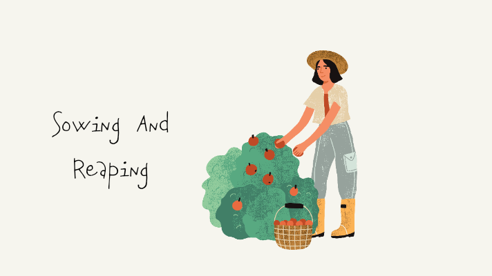

Whatever you sow, you shall reap. Or in other words, whatever you reap is what you sowed. If you don’t like the crop, look at whoever planted it.
These statement mean to say that, if you want something, you have to work for it. You got what you have worked for. If you don’t like what you have, check back what you have done and not done. You cannot be disappointed if you don’t get something when you did not do anything to get it
To further understand the law of sowing and reaping, you need to know these 7 points:
- Negative. You sow bad, you reap bad.
- Positive. You sow good, you reap good.
- More. You don’t reap what you sow, you reap more than what you sow.
- More negative. You sow bad, you reap more bad.
- More positive. You sow good, you reap more good.
- Sometimes, you could lose. You have to get ready for that. Not to think of that is naive.
- If you don’t sow, you don’t reap. You don’t even have a chance.
Finally, you have to keep sowing, and don’t quit. The seeds will eventually get to the good ground if you keep sowing. You will always got what you work for, what you want, if you really work for it.
Get some sowing going !

Sincerely,
azharijahin